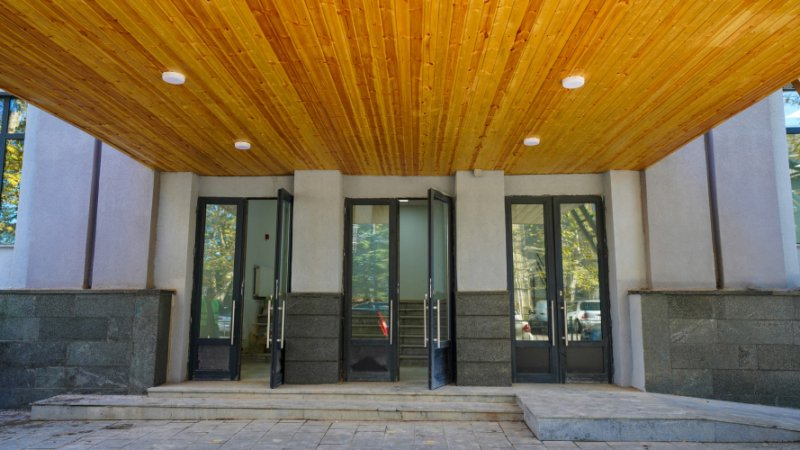

მთავარი
ქუთაისის N 9 რუსული საშუალო სკოლა დაარსდა ქუთაისის N 5 პოლიტექნიკური რუსული სკოლის ბაზაზე, რომელიც არსებობდა 1922 წლიდან. თავდაპირველად სკოლა იყო არასრული საშუალო, რომელიც ქალაქის მუშათა, გლეხთა და წითელ არმიელთა დეპუტატების საბჭოს პრეზიდიუმის სხდომის 1937 წლის 21 აგვისტოს
N 36/7 დადგენილების საფუძველზე გადაკეთდა მე-9 რუსულ სრულ საშუალო სკოლად. 1943 წლის 19 აგვისტოს N 129 დადგენილებით დაფუძნდა
N 9 ვაჟთა რუსული საშუალო სკოლის სახელწოდებით. 1954 წლის 22 ივლისის N 73 დადგენილებით სკოლა იწოდა N 9 რუსულ საშუალო სკოლად. 1991 წლის 11 იანვრის N 19 გადაწყვეტილებით ეწოდა ქუთაისის N 9 კლასიკური გიმნაზია, ხოლო ქუთაისის პრეფექტურის 1994 წლის 14 აგვისტოს N 227 განკარგულებით - ქუთაისის N 9 სკოლა-გიმნაზია.
1995 წლის 24 იანვრის N 54 განკარგულების თანახმად სკოლა-გიმნაზიას შეუერთდა რკინიგზის N 12 საშუალო სკოლა. 1995 წლის სექტემბრიდან გახდა ქართულენოვანი სკოლა. საქართველოს განათლებისა და მეცნიერების მინისტრის 2005 წლის 15 სექტემბრის N 448 ბრძანების საფუძველზე სკოლა დაფუძნდა ქუთაისის N 9 საჯარო სკოლის სახელწოდებით. ამჟამად სკოლა დამოუკიდებლად ახორციელებს საგანმანათლებლო საქმიანობას და უზრუნველყოფს ზოგადი განათლების მიღებას დაწყებითი, საბაზო და საშუალო საფეხურზე. 1922-1928 წლებში სკოლის დირექტორი იყო ერუდირებული, განათლებული პიროვნება ზინაიდა ერმილოვა.
